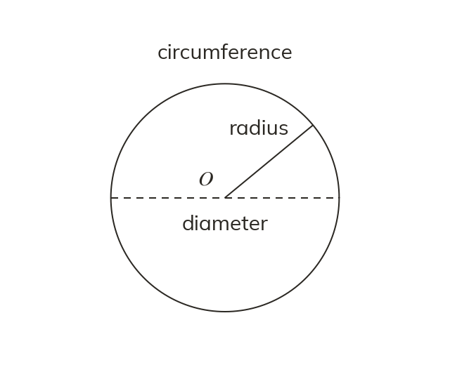

The circle's own measurements
The radius runs from the centre to the edge. The diameter goes straight through the centre: twice the radius. The circumference is the distance all the way round.
A circle is defined by its centre and its radius - the fixed distance from the centre to every point on the edge. The diameter runs from one edge of the circle to the other, straight through the centre, so it is always exactly twice the radius. The circumference is the total distance around the outside of the circle - the circle's own perimeter.